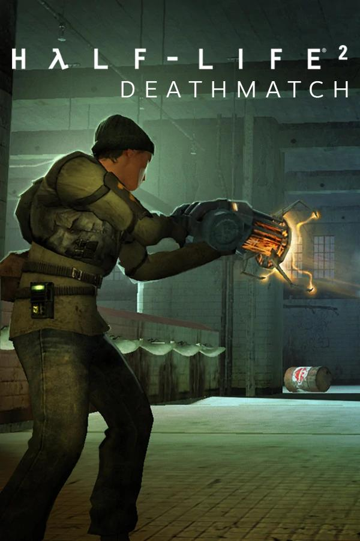
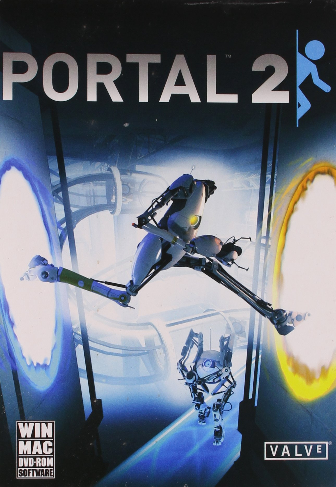
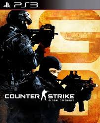
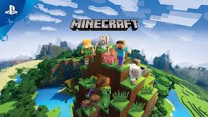
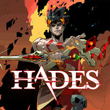

Half-Life 2

Un juego de disparos en primera persona desarrollado por Valve, conocido por su narrativa y física innovadora.
Género: Acción, Aventura
Año: 2004
|
Portal 2

Un juego de puzles en primera persona desarrollado por Valve que desafía la gravedad y la lógica con portales dimensionales.
Género: Puzles, Ciencia ficción
Año: 2011
|
The Witcher 3: Wild Hunt

Un juego de rol de mundo abierto desarrollado por CD Projekt Red, ambientado en un mundo de fantasía lleno de criaturas mitológicas.
Género: RPG, Aventura
Año: 2015
|
Dota 2

Un juego de batalla en línea en equipo desarrollado por Valve, que
enfrenta a dos equipos de cinco jugadores en un mapa estratégico.
Género: MOBA
Año: 2013
|
Counter-Strike: Global Offensive

Un juego de disparos en primera persona táctico donde dos equipos
compiten en misiones de desactivación de bombas o rescate de rehenes.
Género: Shooter, Acción
Año: 2012
|
Grand Theft Auto V

Un juego de acción y aventura de mundo abierto de Rockstar Games,
donde los jugadores pueden explorar y realizar diversas actividades
criminales.
Género: Acción, Aventura
Año: 2015
|
Minecraft

Un juego de sandbox donde los jugadores pueden construir y explorar
mundos generados aleatoriamente con bloques y recursos naturales.
Género: Sandbox, Aventura
Año: 2011
|
Hades

Un juego roguelike de acción en el que controlas a Zagreus, el hijo de
Hades, mientras intentas escapar del inframundo.
Género: Roguelike, Acción
Año: 2020
|
Stardew Valley

Un juego de rol donde gestionas una granja, cultivas cultivos, crías
animales y participas en diversas actividades en una pequeña
comunidad.
Género: Rol, Simulación
Año: 2016
|